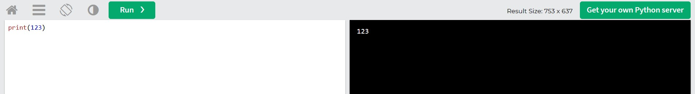

Python necə yazılır?
Bu nümunədə biz, "Hello World" ifadəsini ekrana çıxartdıq. Gördüyünüz kimi, "print" əmri ekrana məlumat çıxarmaq üçün istifadə olunur
"Print" əmri özündən sonra mötərizə açılışı və bağlanışı tələb edir. Bundan əlavə, əgər siz ekrana sadə yazı, proqramlaşdırma dilində desək "string" çıxartmaq istəyirsinizsə, bu yazını dırnaq işarələri içində saxlamalısınız.
Gəlin, digər bir nümunəyə baxaq.
İndi isə, ekrana 123 ədədini çıxaraq. Bunun üçün terminalda (kod yazdığımız yerdə) bunu yazmağınız kifayətdir, siz də yoxlayn!
Nə düşündüyünüzü bilirəm,"Bəs dırnaq işarəsi?" Bu cür düşüncə ilə düz buyurmuş olursunuz, bunu həm də dırnaq işarəsi ilə ekrana çıxartmaq olar, lakin o zaman ədəd olaraq yox, string (yazı) olaraq ekrana çıxacaq və bununla aritmetik əməliyyatlar etmək mümkün olmayacaq. Rəqəmlər dırnaq işarəsiz olmalıdır.